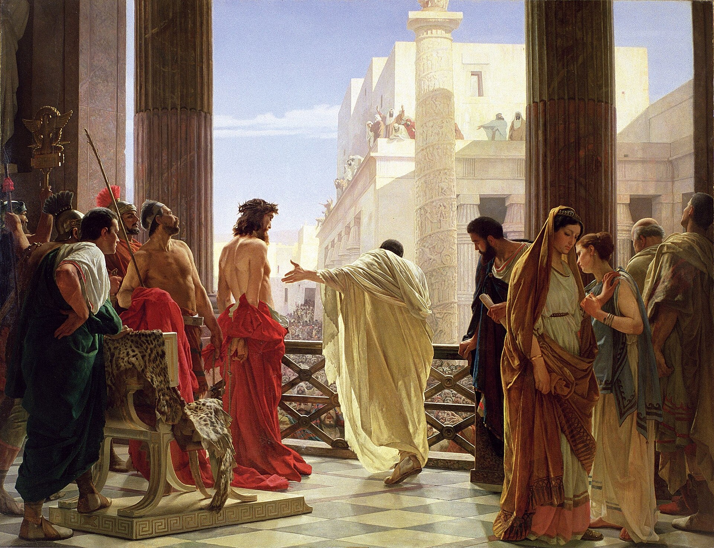

John 19 — The Mister Translation

⚠ Ciseri paints the single scene (vv4–5) that gives this chapter its traditional Latin name, ‘Ecce homo,’ and stages it from directly BEHIND Pilate and Jesus, so that neither man's face is visible at all — the viewer sees only what the crowd in the text would have seen, looking up from below. The one face turned toward the viewer belongs to a richly dressed woman at the left, almost universally identified as Pilate's wife — a figure this Gospel never mentions; her warning dream and plea to Pilate belong to Matthew's account alone (Matthew 27:19, already on these pages). The painting borrows a face from a different Gospel for the one human reaction it chooses to show.
.jpg){kind=link}
Notes on this translation
⚠ This Gospel's placement of the scourging is distinctive: here it comes BEFORE the death sentence, as something Pilate seems to hope will satisfy the crowd and let him release Jesus afterward (see v4) — in Matthew and Mark, the scourging comes AFTER the sentence, immediately before the crucifixion itself, with no suggestion it was meant as an alternative (Matthew 27:26; Mark 15:15, both already on these pages). Luke's own account never narrates a scourging at all, though Pilate twice proposes to 'punish' Jesus and release him (Luke 23:16, 22, already on these pages) — a proposal this Gospel's own sequence of events would make sense of. The four accounts agree on the brutality and disagree on its place in the story.
The crown, the purple garment, and the mock salute ‘Hail, King of the Jews’ are a soldiers' parody of an actual Roman accession ceremony — a wreath, a purple cloak, and the acclamation a new Caesar received. Every one of the three props returns, worn in earnest rather than in mockery, by the end of this very book: a king enthroned, in purple, acclaimed by name. The soldiers intend cruelty; the scene stages, without meaning to, the thing it is mocking.
⚠ ASV and KJV both read the bare ‘scourged him’ at v1, matching this translation; NIV instead reads ‘had him flogged,’ a causative that names Pilate as the one who orders the act rather than the one who performs it — a fair inference (a Roman prefect did not personally wield the whip) but one step removed from what the Greek verb itself says.
⚠ Last chapter's own closing note promised this exact repetition, and it lands precisely where promised: ‘I find no basis for a charge against him’ (18:38, already on these pages) recurs here almost word for word (v4) and again two verses later (v6) — a governor who states the defendant's innocence three times across two chapters and crucifies him regardless. Luke's own account builds an independent structure on the identical number: Pilate declares Jesus innocent three times in his Gospel too, at 23:4, 14 and, explicitly numbered, 'a third time' at 23:22 (all already on these pages) — two Gospels, counting differently and at different moments, arrive at the same figure for the same governor's reluctance.
‘Look! The man!’ (v5, the traditional Latin Ecce homo) is addressed to a crowd that has just mocked Jesus as a king; Pilate's own word is the plainer, more contemptuous ‘the man,’ not a title at all. Whether Pilate intends pity, contempt, or simply a flat presentation of the beaten prisoner before him, the text does not say — the phrase has carried all three readings through the history of its reception.
⚠ v7 states, for the only time in this whole trial narrative, the actual legal charge behind the demand for death: not insurrection, not blasphemy against Caesar, but that Jesus ‘made himself the Son of God’ — a charge this Gospel has been building toward since its own opening claim that the Word was God (1:1, already on these pages, this verse still not in Spanish). The charge that will kill him is, in this Gospel's own terms, simply true.
Pilate's question ‘where are you from?’ (v9) is a second attempt at the same inquiry this Gospel's own readers already know the answer to from its opening chapter (‘the Word became flesh,’ 1:14, already on these pages, still not in Spanish) — Jesus's silence here answers a question whose real answer Pilate could not use anyway.
⚠ Pilate's claim to ‘authority’ (exousia, v10, twice) over Jesus's life and death is answered by Jesus with the identical noun — the same word this Gospel already put in Jesus's own mouth of his own death, weeks earlier: ‘I have AUTHORITY to lay it down, and I have AUTHORITY to take it up again’ (10:18, already on these pages). Pilate believes he holds a power that, in this Gospel's own telling, Jesus has already claimed to hold himself, received from the Father rather than from Rome; v11 simply states the actual chain of authority Pilate is operating inside without realizing it.
⚠ ‘The greater sin’ (v11) names a comparison this Gospel leaves genuinely open — greater than WHOSE, exactly, the text never specifies: Caiaphas, who has already prophesied Jesus's death as policy (18:14, already on these pages); Judas, 'the one who handed him over' earlier in this same book (18:5, already on these pages); or the nation as a body. Jesus assigns a greater guilt without naming a lesser one by name, and this translation leaves the comparison as open as the Greek does.
⚠ ‘Friend of Caesar’ (amicus Caesaris, v12) was close to a formal title in Roman political life, not a figure of speech — and the charge carried real danger for Pilate specifically: his own patron at Rome, the praetorian prefect Sejanus, had fallen from power and been executed in 31 CE, a matter of a very few years before this trial on the most common datings, leaving every official Sejanus had promoted newly exposed to exactly this kind of accusation. The crowd's threat is not generic; it names the single political vulnerability Pilate could least afford to have reported to Rome.
Gabbatha (v13) is named, like Golgotha four verses later, in both Greek and a Semitic language at once — this Gospel's own habit at a scene's turning points — and its exact location, like the praitōrion itself, is not recoverable from the text; see the encyclopedia entry. ⚠ The Greek word the shelf renders 'in Hebrew' (Hebraisti) is read by most modern scholarship as meaning Aramaic, the everyday spoken language, rather than literary Hebrew; NIV breaks with the rest of the shelf and translates the word outright, 'the Stone Pavement (which in Aramaic is Gabbatha),' where ASV, KJV and DRA all keep the shelf's conventional 'in Hebrew' — the rendering this translation follows, while noting the scholarly question that choice raises.
⚠ This chapter's 'about the sixth hour' (v14) for Pilate's sentence sits awkwardly beside Mark's own 'third hour' for the crucifixion itself (Mark 15:25, already on these pages) — a second chronological seam alongside the Passover-meal timing this translation already flagged last chapter (18:28, already on these pages), stated here rather than harmonized.
⚠ ‘We have no king but Caesar’ (v15) is the chief priests' own answer to Pilate's taunt, and it reverses, in six words, the oldest confession of this same nation's own Scriptures — a kingship belonging to God alone, the premise behind the people's demand for a HUMAN king in the first place being read, centuries earlier, as itself a rejection of God's own rule (1 Samuel 8:7, not yet on these pages). The priests who exist to guard that confession speak its exact opposite to keep a Roman governor from freeing the man they call a false king.
⚠ This Gospel alone has Jesus ‘carrying the cross BY HIMSELF’ (v17) all the way to Golgotha; all three Synoptic accounts instead have the soldiers press a bystander, Simon of Cyrene, into carrying it (Matthew 27:32; Mark 15:21; Luke 23:26, all already on these pages) — a detail this Gospel's own account simply has no room for, Simon appearing nowhere in it at all. Whether this reflects a different memory of the same event or this Gospel's own consistent portrait of a death entirely under Jesus's own control (see 10:18, above), the Gospels report the walk to the cross two different ways, and this translation states the difference rather than merging the two.
⚠ The four Gospels give Pilate's inscription in four slightly different wordings — Matthew's 'THIS IS JESUS THE KING OF THE JEWS' (27:37), Mark's bare 'THE KING OF THE JEWS' (15:26), Luke's 'THIS IS THE KING OF THE JEWS' (23:38, all already on these pages), and this Gospel's own fuller 'JESUS THE NAZARENE, THE KING OF THE JEWS' (v19) — and only this Gospel reports it posted in three languages (v20) or records the chief priests' own objection to it (v21). See the dictionary entry for the Roman practice behind the placard itself.
‘What I have written, I have written’ (v22) is the one moment in this entire trial where Pilate does NOT yield to the chief priests' pressure, after three separate declarations of innocence he abandoned and a death sentence he handed down against his own stated judgment. The single thing this governor refuses to undo is six words on a sign.
⚠ Only this Gospel describes the tunic as ‘seamless, woven in one piece’ (v23) — Josephus, writing of the Jerusalem high priest's own ceremonial robe, reports it in strikingly similar terms, woven without a seam from top to bottom; whether this Gospel means its reader to hear a priestly echo in Jesus's own garment, the text draws no such conclusion itself, and this translation reports the parallel without resolving what it means. See the dictionary entry.
Verse 24 quotes Psalm 22:18 (Psalm 22 itself not yet on these pages) as the reason the soldiers acted the way they did (‘so that the scripture would be fulfilled’), not merely as a coincidence this Gospel notices afterward — the same psalm whose opening cry, ‘My God, my God, why have you forsaken me?’, is on Jesus's own lips in Matthew's and Mark's accounts of this same crucifixion (Matthew 27:46; Mark 15:34, both already on these pages) but never appears anywhere in this Gospel. This Gospel draws on the one psalm most associated with the cry of abandonment for a single physical detail of the execution, and leaves the cry itself for the other two accounts to carry.
⚠ v25's list of women at the cross is read two different ways depending on punctuation Greek itself does not mark: either three women (his mother, his mother's sister who is also Mary the wife of Clopas, and Mary Magdalene) or four (his mother, an unnamed sister, Mary the wife of Clopas, and Mary Magdalene) — a genuine ambiguity this translation states rather than silently resolves by how it punctuates the English. No Synoptic list of the women at the cross matches this one exactly in names or order (compare Matthew 27:56; Mark 15:40; Luke 23:49, all already on these pages) — four independent lists of the same scene, overlapping but never identical.
These two verses are, along with the wedding at Cana, the ONLY place in this entire Gospel where Jesus's mother appears — unnamed in both scenes, called only ‘Woman’ both times (2:4, already on these pages, still not in Spanish; 19:26) — so that the one Gospel that opens with the Word becoming flesh brackets that same flesh's entire public life with his own mother present at its first sign and at its last breath, and never once names her. The disciple entrusted with her care in v26–27 is, by this Gospel's own convention, almost certainly the same unnamed 'disciple whom Jesus loved' already identified at the arrest (18:15, already on these pages).
⚠ ‘I am thirsty’ and ‘It is finished’ are this entire Gospel's only words from the cross, and neither is a cry of pain or abandonment — where Matthew and Mark both record Jesus quoting Psalm 22's opening line, ‘My God, my God, why have you forsaken me?’ (Matthew 27:46; Mark 15:34, both already on these pages), this Gospel gives its reader no such cry at all. The Gospel that has spent its whole second half narrating a death Jesus controls (see v17's note, above) gives that same death exactly two short, composed sentences, the second one announcing its own completion.
⚠ v29's ‘hyssop’ is itself a minor puzzle: hyssop is a small, bushy herb, not a reed, and would make an unlikely stalk to lift a soaked sponge to the mouth of a man on a cross — Matthew's and Mark's own parallel accounts both specify a reed (kalamos) instead (Matthew 27:48; Mark 15:36, both already on these pages), and a small number of Greek manuscripts of this verse read hyssos, 'a javelin,' instead of hyssōpō, 'hyssop' — a one-letter difference in Greek that would solve the practical difficulty entirely. The hyssop reading has the stronger and older manuscript support, and most editions keep it; if genuine, it may deliberately recall hyssop's own role applying the Passover lamb's blood at the first Passover (Exodus 12:22, already on these pages) — a detail arriving at the one Gospel that has already called Jesus 'the Lamb of God' in its own opening chapter (1:29, already on these pages, still not in Spanish).
⚠ ‘It is finished’ translates a single Greek word, tetelestai, the perfect tense of a verb this Gospel has already used twice of Jesus's own stated mission (4:34; 17:4, both already on these pages) — see the dictionary entry for the one-letter switch of verb this translation preserves rather than smooths over. ASV, KJV and GNV all print the identical 'It is finished,' matching this translation; NWT 1984 instead reads 'It has been accomplished!' — a fuller gloss of the one-word perfect that spells out the tense rather than letting the single short sentence carry it. A single word closes, with no further comment, a work this Gospel announced twice before as already underway.
⚠ ‘That Sabbath was a great day’ (v31) means this particular weekly Sabbath coincided with a day of the Passover festival itself — a double solemnity, not a superlative about an ordinary week — which is why the Jewish leaders press for the bodies' removal before sundown with unusual urgency; breaking the legs (crurifragium, a recognized Roman practice) hastened death by removing a crucified man's ability to push himself up to breathe.
⚠ Verse 36's ‘not one of his bones will be broken’ most directly echoes the Passover lamb's own regulation, repeated twice in the Torah — ‘nor break a bone of it’ (Exodus 12:46; Numbers 9:12, both already on these pages) — read beside this Gospel's own placement of Jesus's death at the very hour the Passover lambs were being slaughtered in the temple (see v14's note, above); Psalm 34:20, not yet on these pages, makes a nearly identical claim of the righteous sufferer generally. Verse 37's ‘they will look on the one they pierced’ quotes Zechariah 12:10, not yet on these pages, a text already read messianically well before this Gospel was written.
Verse 35 is this Gospel's own direct claim to eyewitness authority, stated in the third person about an unnamed witness rather than in the first person — the same device this Gospel's own final chapter will use again, at greater length, of the same disciple (John 21:24, not yet on these pages). The blood and water (v34) have drawn centuries of medical and theological comment this translation does not adjudicate; the text itself states only that one soldier's spear produced both, and that someone standing close enough to see it told the truth about what he saw.
⚠ Both men complete a progression this Gospel has been tracking: Nicodemus moves from a private night visit (John 3:1–2, already on these pages) to speaking up, by name, among his fellow council members (7:50–51, already on these pages) to this chapter's open act; Joseph, introduced here as ‘a disciple of Jesus, but a secret one, for fear of the Jewish leaders’ (v38), takes the furthest step of the two, asking a Roman governor directly for the body of a man condemned as a political criminal. Fear that kept two men quiet gives way, at the one moment it costs the most, to the opposite.
⚠ ‘About a hundred Roman pounds’ of myrrh and aloes (v39) is an extravagant quantity for a single burial — closer to the scale of a king's funeral than an ordinary one — arriving for a man three chapters of mockery have just finished calling ‘King of the Jews’ in three languages (see v19's note, above). No Synoptic account gives any quantity of spices at all for this burial; this Gospel alone supplies a number, and a strikingly large one.
The garden (v41) that holds Jesus's tomb is the second garden this whole library has named at a decisive moment in a human life — the first was the garden a man and woman were sent out of at the very beginning of this library's own first book (Genesis 3:23–24, already on these pages). This Gospel does not say so itself, and this translation does not claim the parallel as the text's own argument — but a death is laid, with great care, in a garden one chapter before this same book opens its next scene in that same garden at dawn.
Patterns worth carrying forward.
⚠ Renderings chosen. Hoi Ioudaioi continues last chapter's three-way split: ‘the Jewish leaders’ for the hostile authority at every point in the trial and crucifixion (vv7, 12, 14, 31, 38, 40), ‘the Jewish people’ for the generic public reading the inscription (v20). Titlos is kept as ‘title’ rather than ‘sign’ or ‘inscription,’ tracking the Roman legal term (see the dictionary entry). Chitōn is kept as ‘tunic’ against the outer ‘garments’ (himatia) divided one clause earlier in the same verse. Tetelestai is kept as the single word ‘It is finished,’ preserving the one-word economy of the Greek rather than expanding it.
Echoes paid. ‘I find no basis for a charge against him’ (18:38, already on these pages) is repeated exactly, as promised, at v4 and v6. The ‘King of the Jews’ title Pilate has been asking about since 18:33 becomes the inscription of v19–20, in three languages, exactly as last chapter's closing note promised. ‘Authority’ (v10–11) answers Jesus's own identical claim at 10:18. ‘Tetelestai’ (v30) answers this Gospel's own earlier ‘complete his work’ (4:34) and ‘I have finished the work you gave me’ (17:4), all already on these pages.
Echoes planted. The charcoal fire from last chapter returns, still not yet, at Peter's own restoration (John 21:9). Jesus's mother, ‘Woman’ here as at Cana, is not seen again in this Gospel. The garden tomb (v41) is where this book's own next chapter opens, at dawn (John 20:1, already on these pages). And the eyewitness claim of v35 is restated once more, of the same disciple, at this Gospel's own close (21:24, not yet on these pages).
This chapter completes the crucifixion, death, and burial; the book's own sequence runs unbroken from chapter 1 through this chapter — next in sequence is John 20, the empty tomb at dawn in that same garden, and the first appearances of the risen Jesus.